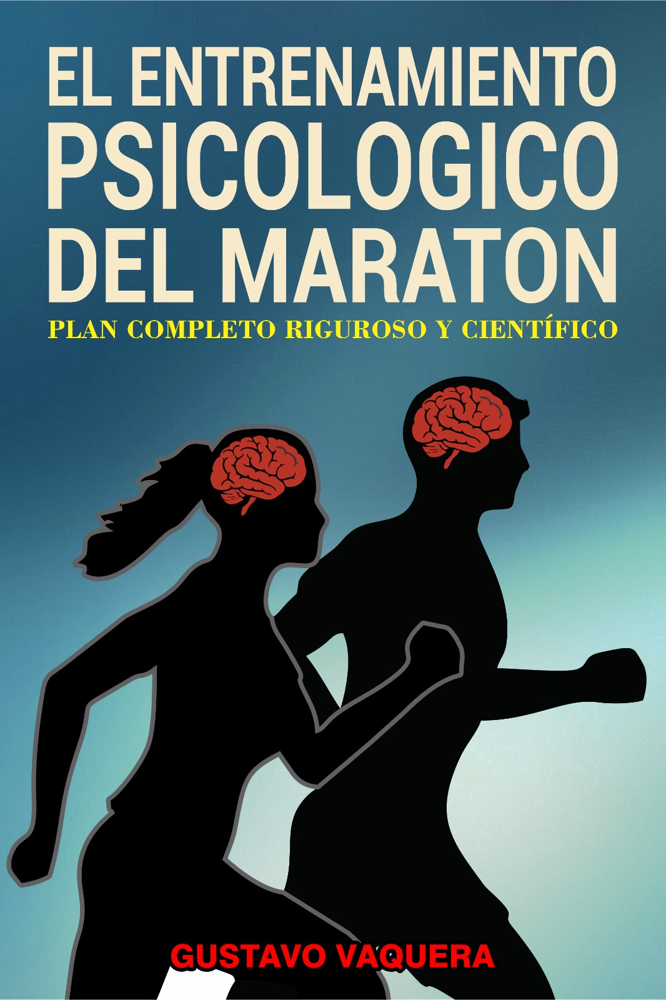

Entrenamiento psicologico del maraton
El libro aborda la preparación psicológica en el maratón, una dimensión frecuentemente descuidada frente al enfoque en aspectos running, fisiológicos, nutricionales y biomecánicos. Aunque se reconoce que la mente es crucial – especialmente en los últimos 12 kms – muchos corredores y entrenadores carecen de un método sistemático para desarrollarla, limitándose a consejos intuitivos, o motivacionales. La obra desmonta el mito de que el sufrimiento físico automáticamente fortalece la mente y crítica la falta de herramientas concretas en la literatura clásica. Propone un enfoque científico, integrando Neurociencias, Psicoanálisis, Psicología del Deporte y experiencias de atletas profesionales, para entrenar habilidades como resiliencia, gestión del dolor, concentración, motivación, resistencia psicológica, control de la ansiedad y otros factores psicológicos que influyen en el rendimiento de un atleta durante la carrera Maratón. Incluye un plan de 16 semanas con técnicas validadas científicamente (visualización, Mindfullnes, diarios de entrenamiento mental), demostrando que no sólo hay que mencionar los aspectos psicológicos sino dar cuenta cómo se los puede entrenar.
Tecnica entrenar en el presente
Consiste en estar en un entrenamiento y empezar a respirar en dos fases, en la fase de inspirar oxígeno realizarlo en 4 tiempos (1-2-3-4) y en la fase de expirar en 5 tiempos (5-4-3-2-1) y sólo correr con esa ejercitación, sin pensar en otra cosa. Este ejemplo sencillo, primero se lo puede aplicar en los entrenamientos aeróbicos, luego en las series rápidas (aunque cueste creerlo) y después durante los entrenos a ritmo carrera. La práctica de este ejercicio es el verdadero fortalecimiento mental. Una vez que el atleta pueda realizar la técnica de Entrenar en el Presente con facilidad en los entrenamientos ha asegurado una carrera maratón con un 5-8% mayor de rendimiento que quiénes no han desarrollado esta técnica.
📘 Este libro está disponible en tres idiomas: español, inglés y francés.
📘 Podes encontrarlos en las plataformas: Amazon y mercado libre
Lo que dicen los lectores
"Gracias a este libro, logré mejorar mi enfoque en las carreras de fondo. ¡Altamente recomendable!"
"Una herramienta fundamental para entrenar cuerpo y mente."